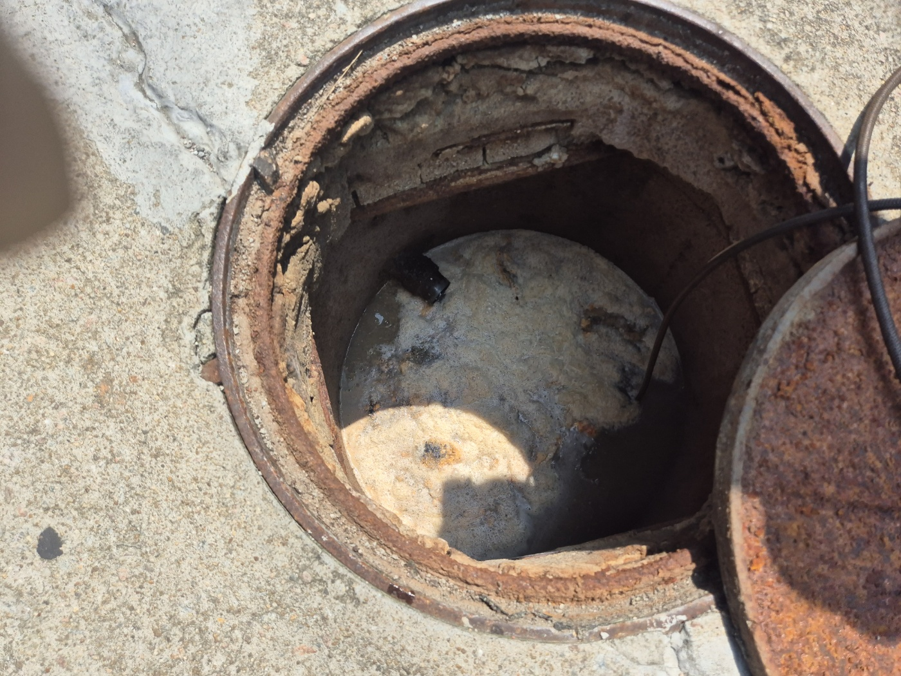

| 작업 현장 | 경기도 안성시 공도읍 소재 다세대 원룸 건물 지하 세대 및 메인 집수정 |
|---|---|
| 증상 요약 | 지하 세대 다용도실 바닥 배수구로 검은 오수 역류 및 광범위한 악취·침수 발생 |
| 원인 분석 | 상층부 배출 기름때 및 석회 물질이 메인 집수정 유입관 단면의 80% 이상을 굳게 막아 발생 |
| 적용 공법 | 옥상 입상관 및 지상 맨홀 내시경 정밀 진단 ➔ 단단한 응고 유지방 슬러지 인출 ➔ 차량용 고압세척 세정 |
| 시공 결과 | 관로 내 내착 스케일 완전 제거, 배관 원내경 복원 및 지하 세대 역류 완전 해소 |
다세대 원룸 건물 지하 세대는 메인 하수관 하류에 위치해 주배관 폐색 시 상층부 유량이 직접 역류하는 취약 구조를 가집니다. 고고고설비는 옥상 입상관 점검구와 지상 메인 맨홀 양방향에서 배관 내시경 정밀 탐지를 실시하여 정확한 폐색 지점을 포착합니다. 관로 내 가로막힌 거대한 석회·유지방 응고체를 견인한 후, **고압세척 특수 노즐**로 내벽을 완벽히 스케일링하여 재발 없는 원상 복원을 실현합니다.
📷 현장 작업 과정 및 정밀 내시경·고압세척 동영상을 확인하고 싶으신가요?
🟢 네이버 블로그에서 '실제 시공과정 전체보기'고고고설비는 안성, 공도읍, 평택 전 지역 원룸, 빌라, 상가 건물의 지하 하수구 역류 및 메인관 막힘 문제를 첨단 내시경 진단과 고압세척 장비로 근본 해결해 드립니다.